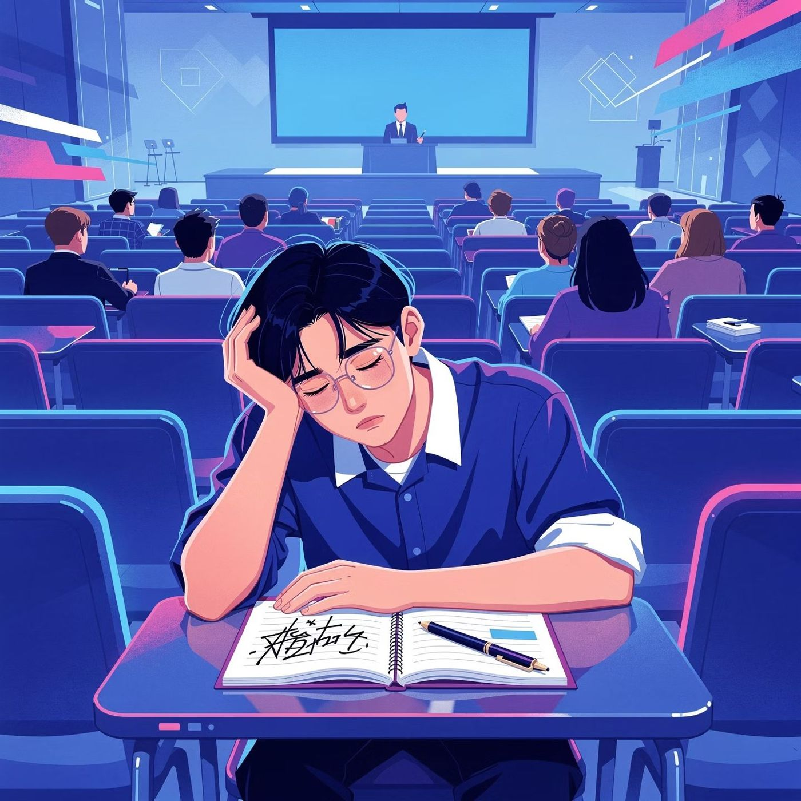
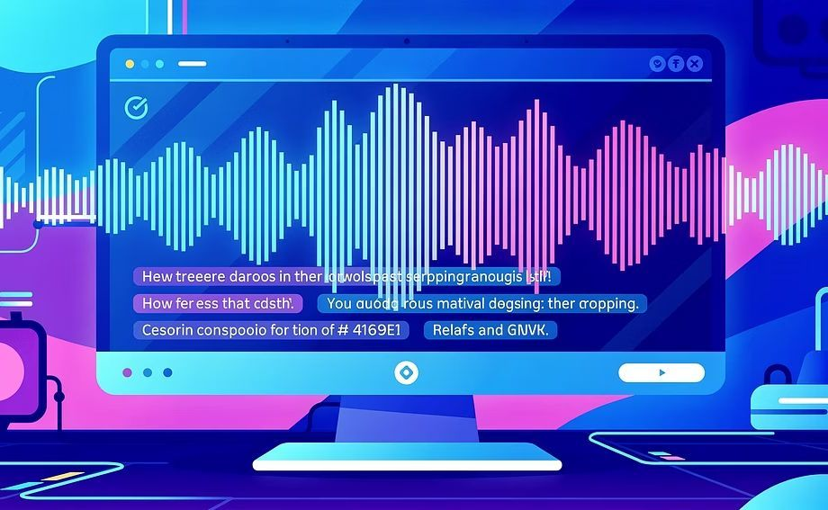
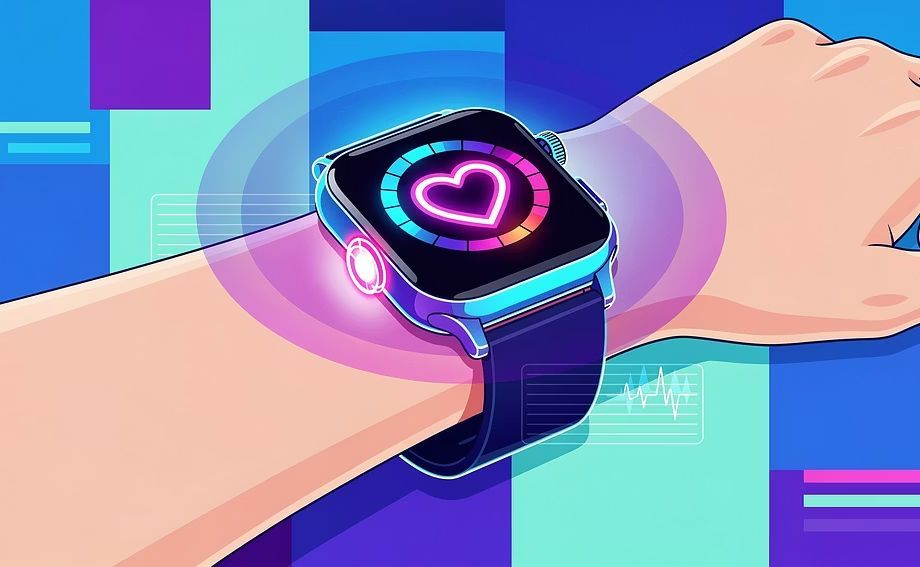
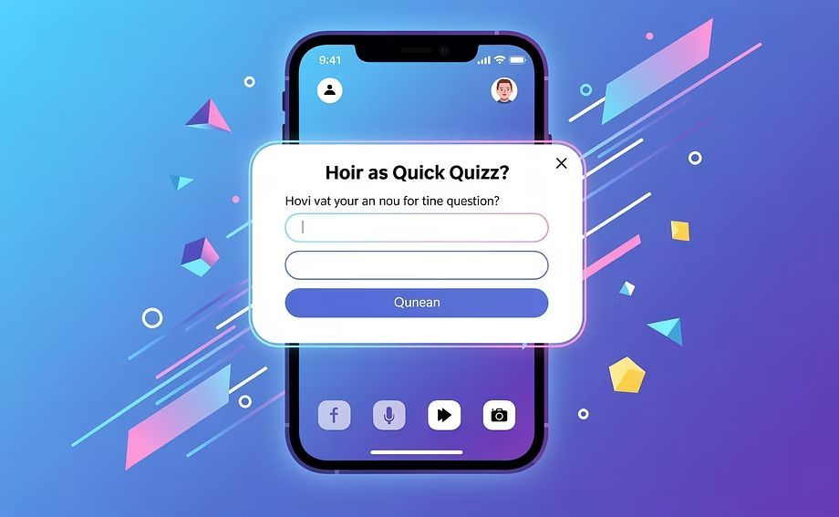
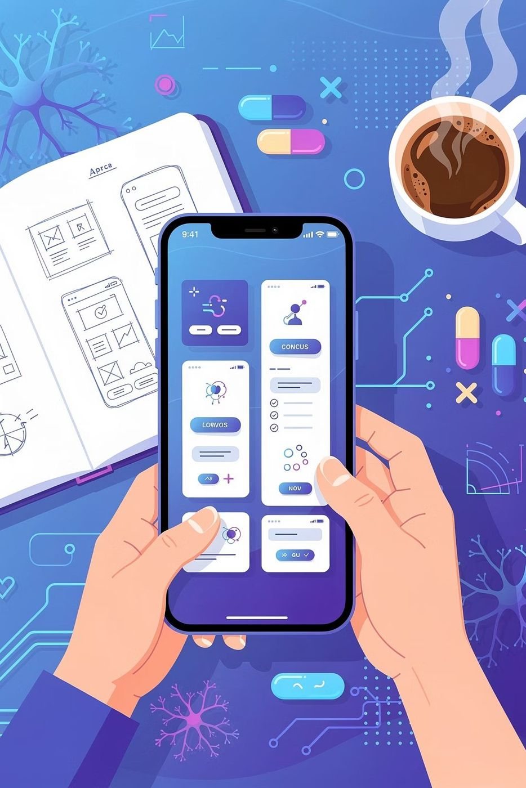
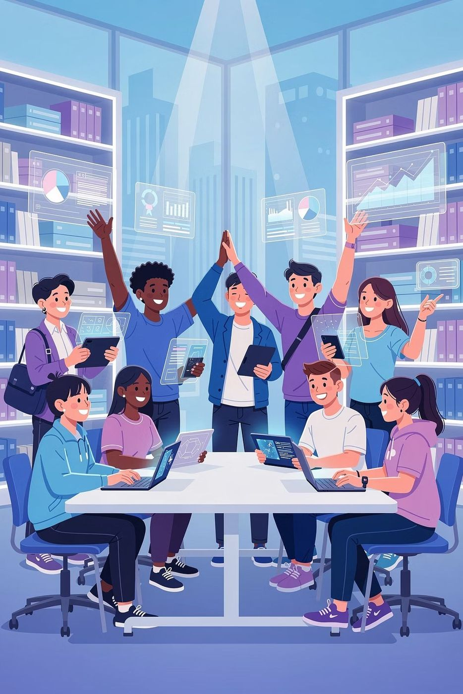
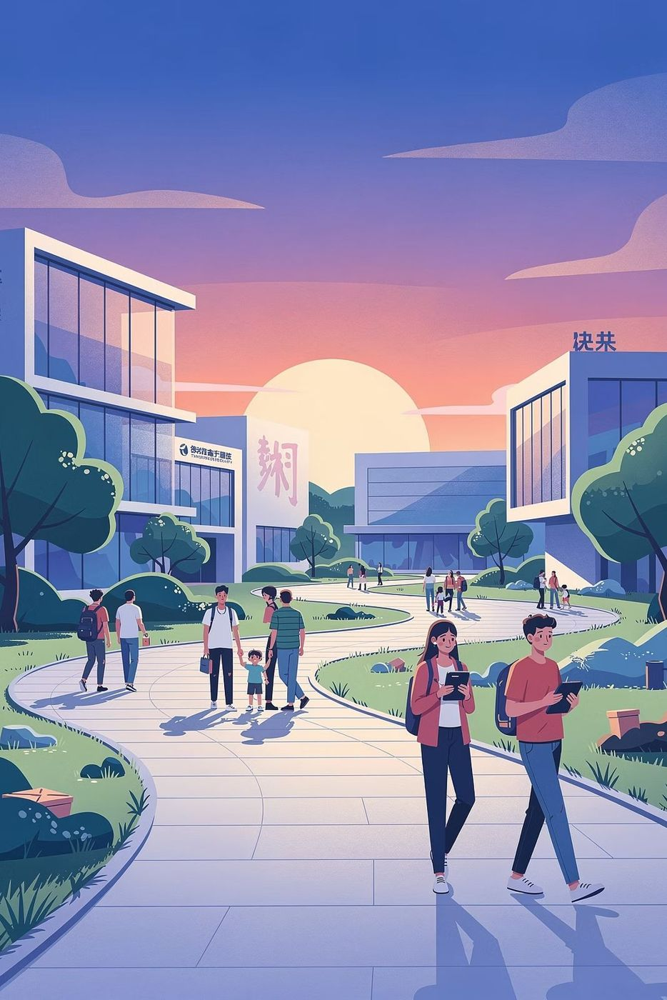

FocusSync
1st Place, Tetra TMU Biomedical Design Case CompetitionA mobile app and smartwatch companion that keeps ADHD learners awake, engaged, and on track in lectures.
My role
I led project management for the team of four, driving FocusSync from user-needs research through prototype development and the final pitch. I presented to the expert judging panel and translated a clinical need into a clear technical and business case.
The problem
Traditional lectures are long, passive, and monotonous. Students with ADHD often experience heavy on-task sleepiness, skip class, teach themselves, and fall further behind. We called this cycle the ADHD tax.


The solution
- Real-time transcription. A live transcript, summary, flashcards, and practice problems from the lecture audio.
- Biometric sleep detection. A drop in heart rate or wandering eyes triggers a gentle haptic buzz on the wrist.
- AI micro-questions. Brief questions about what the professor just said keep the brain engaged. Beta testing showed they need to stay under 10 words.



How it compares
| Feature | Traditional apps | CocoNote | FocusSync |
|---|---|---|---|
| AI transcription | No | Yes | Yes |
| Auto summaries and flashcards | No | Yes | Yes |
| Biometric sleep detection | No | No | Yes |
| Haptic wake-up alerts | No | No | Yes |
| Real-time micro-questions | No | No | Yes |
Prototype
We built an early experiential prototype demonstrating live transcription, haptic alerts, and AI-generated micro-questions.

Roadmap
- Month 1: focus groups with TMU Academic Accommodation Support and neurodivergent students.
- Months 2 to 3: build the AI transcription engine and integrate heart rate data from Apple Watch and WearOS.
- Months 4 to 5: beta testing in 2-hour TMU lectures.
- Month 6: campus-wide launch.
Budget
$10,000 MVP: $5K AI and cloud, $2K app development, $2K testing and accessibility audits, $1K contingency. The app runs entirely on personal devices, so campus installation cost is $0.

